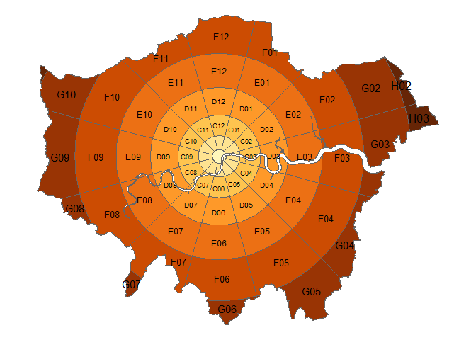

The goal of zonebuilder is to break up large geographic regions such as cities into manageable zones. Zoning systems are important in many fields, including transport planning, where we hope to use the zones generated by zonebuilder to build the evidence base needed to enable uptake of healthy modes of transport like walking, cycling and renewable electricity-powered public transport. See its website at zonebuilders.github.io/zonebuilder.
Installation
Install it from GitHub with:
Using zonebuilder
Zonebuilder works with sf objects and works well alongside the sf package and visualisation packages that support spatial data such as ggplot2, leaflet, mapdeck, mapview and tmap, the last of which we’ll use in the following maps. Attaching the package provides the example dataset london_area, the geographic boundary of a large city (London, UK):

The core functions in the package break up geographical space into discrete chunks. The syntax is designed to be user friendly. The following command, for example, breaks London into quadrats of equal size (and keeping only the space inside the boundary):

Another zoning option is ‘doughnuts’:
tmap_arrange(
qtm(zb_doughnut(x, n_circles = 3)) + tmap_border,
qtm(zb_doughnut(x, distance = 3)) + tmap_border
)
#> Set distance to enable distance_growth
A new zoning system implemented in the function zb_zone() segments doughnuts of gradually increasing width to create concentric segmented annuli (CSA):
library(zonebuilder)
x = london_area
z = zb_zone(x)
z
#> Simple feature collection with 76 features and 3 fields
#> geometry type: GEOMETRY
#> dimension: XY
#> bbox: xmin: 503458.6 ymin: 155907.5 xmax: 561840.6 ymax: 200985.4
#> epsg (SRID): 27700
#> proj4string: +proj=tmerc +lat_0=49 +lon_0=-2 +k=0.9996012717 +x_0=400000 +y_0=-100000 +ellps=airy +units=m +no_defs
#> First 10 features:
#> circle_id segment_id label geometry
#> 1 1 01 A MULTIPOLYGON (((532101.7 17...
#> 2 2 01 B01 MULTIPOLYGON (((531808.8 18...
#> 3 2 02 B02 MULTIPOLYGON (((532067.6 17...
#> 4 2 03 B03 MULTIPOLYGON (((534101.7 17...
#> 5 2 04 B04 POLYGON ((533999.5 178928, ...
#> 6 2 05 B05 POLYGON ((533223 177583.2, ...
#> 7 2 06 B06 POLYGON ((531878.2 176806.7...
#> 8 2 07 B07 MULTIPOLYGON (((530325.3 17...
#> 9 2 08 B08 MULTIPOLYGON (((528980.4 17...
#> 10 2 09 B09 POLYGON ((528203.9 178928, ...
qtm(z)
This function gives you control over a number of parameters, as documented in the help pages and an in-progress academic paper.
args(zb_zone)
#> function (x = NULL, point = NULL, n_circles = NULL, n_segments = 12,
#> distance = 1, distance_growth = 1, starting_angle = 15, segment_center = FALSE,
#> intersection = TRUE)
#> NULLThe zones are labeled by default in the following way. The rings are labels with capital letters, where A is the centre. The segments are numbers using clock hours, so 12, 3, 6, and 9 for north, east, south, west respectivly.
z = zb_zone(x, n_circles = 4)
tm_shape(z) +
tm_polygons(col = "circle_id", legend.show = FALSE, palette = "magma") +
tm_text("label")